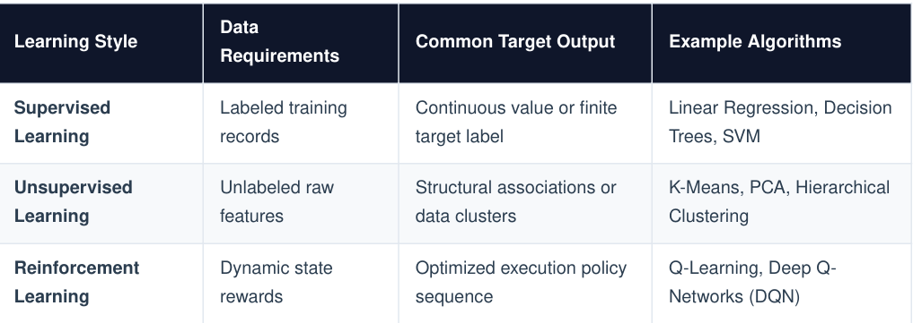
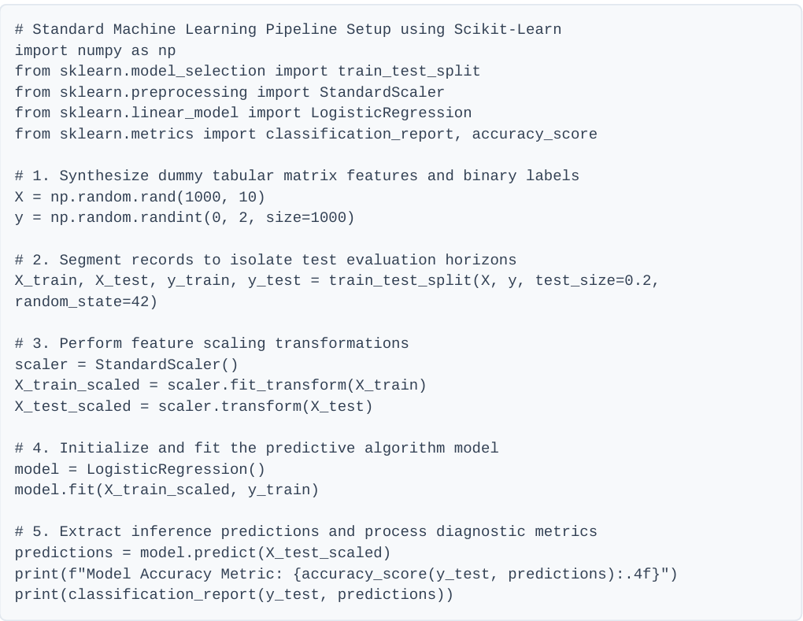

Data Science & Machine Learning Course
Data Science is an interdisciplinary paradigm that combines domain expertise, programming skills, and mathematical foundations to extract actionable insights from structured and unstructured datasets.
Raw analytical infrastructure is often incomplete or inconsistent. Transforming data into clean execution matrices involves several core tasks:
- Imputation of Missing Values:Values: Strategies include dropping sparse attributes, replacing numeric gaps with mean/median metrics, or leveraging advanced predictive tracking models.
- Feature Encoding: Converting categorical strings into logical numeric vectors using methods like One-Hot Encoding or Label Encoding.
- Feature Scaling: Standardizing numeric variables to prevent mathematical variance using Standardization (Z-score normalizations) or Min-Max Normalization techniques.
Garbage In, Garbage Out (GIGO)
The predictive boundaries of any machine learning engine are strictly bounded by the structural fidelity of its data ingestion layer. Data preprocessing routinely represents 70-80% of an engineer's operational workflows
Machine learning focuses on engineering algorithm models that scan data distributions to dynamically discover mathematical rules without manual software instruction blocks.

2. Model Evaluation Standards
Evaluating algorithmic inference capabilities requires structured metrics applied against isolated test data allocations:
Regression Evaluation Metrics- Mean Squared Error (MSE): Measures the average squared difference between estimated values and actual outputs.
- Root Mean Squared Error (RMSE): Provides error evaluations mapped directly to the baseline output unit metric scale.
Classification Evaluation Metrics
Classification problems use a structured matrix topology known as a Confusion Matrix to calculate standard diagnostic yields:
- Accuracy: Total true positive and negative outcomes divided by the absolute dataset volume.
- Precission: Quantifies the operational validity of true positive detections against total positive predictions.
- Recall (Sensitivity): Validates the model's capacity to scan and isolate all actual positive occurrences within the training population.
Modern implementation leverages standardized open-source ecosystems like and isolate execution steps within a reusable scripting pipeline.

Or you can download the Pdf files here.